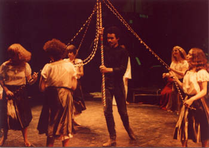
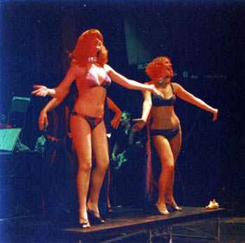
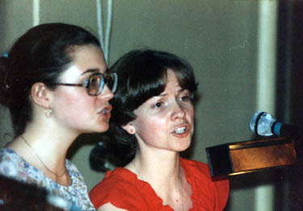
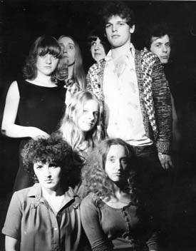
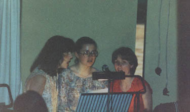
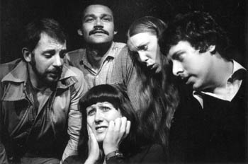

Chapter 14. Stag (the second studio sessions)
In the intervening time we were also preparing for the Royal Exchange version of Stag, which began the second week of the festival on the Monday 30th July 1979. It went every bit as well as I had hoped and was one of my crowning moments of glory, in my estimation at least!

Then suddenly, after a fallow period of hearing nothing from Mike Mansfield, all hell broke loose. It was February 1980 and we were rushed back in to do some more recordings, as an interested party (we were deliberately not told who) wanted to hear more. So we were to do some of the more demanding numbers this time on 16-track, all expenses paid of course.
So... we really went to town. We recorded Come, Antichristus, The Time of the End is Now, Love you like the Sea, Second Time Around, Petal Shower, Benvenuto a Roma, Words, and Coming Home.
'Come' was the opening number in the show. Its deliberately medieval sound was done live by the band with me purely on piano and Colin on the synth. However Colin couldn't make any of these second studio sessions so the keyboard parts all fell to me. Realising that I would have to overdub anyway we decided to utilise all the available tracks where appropriate. The choir had four separate parts each built on top of the other, layer by layer. Therefore I used a particularly fat and beefy synth sound to double each of the choir's parts in addition to the drone that runs all the way through the piece. Likewise the basic drum part was overdubbed with a second syncopated (off beat) rhythm on the timbales.
 'Antichristus' this flowed from the previous track and was recorded at the same time. Therefore the drums were double tracked as before. The three apparently interlocking electric guitars in the solo are actually me on a synth and then the two guitarists one after the other. Notable in this song Juliet Wood's highly charged solo verse sung in Latin (I was thinking of Carmina Burana by Carl Orff a classical piece for choir and orchestra when I wrote this)! It has a tendency to throw the listener the first time and for those that don't know Latin the lyrics anticipate the next track...
'The Time of the End' again linked directly from the previous track and opens with a double tracked acoustic 12 string guitar riff (played by myself) before Mike Cheesman's distinctive singing and the band join in. There are some notable additions by the choir who 'answer' the soloist at salient points in the song. The only other overdubbing occurs in the chorus where Mike Bonwick and Geoff Morley put in a scale like run on guitar and bass. The musical point of these interlinked songs is to introduce us to Herne who makes an appearance with a lead vocal in the next song.
'I Love You Like the Sea' opens with myself on piano with Louis Grant singing the haunting melody. Interestingly this song is the middle portion of "Fires In Your Cities" (already recorded in the first session), this was a typical musical technique to partially introduce a tune to the audience early in the show then reveal it's true nature later on. The song was of course completely re-recorded for this session although musically it is identical. A highlight is the strong electric guitar solo that features Geoff Morley.
'Second Time Around' this song involves most of the main soloists as well as a large involvement from the choir, making it one of the hardest songs to record. The tune often appears in a low range with the choir singing harmonies above, so the danger was that the tune would be drowned out by the harmonies. This took a little work in the studio but the results are nicely balanced. After the choir had overdubbed their part we decided to boost the extra harmonies at the final chorus. Therefore the Clark/Dumigan choir (ie me and Mary!) can be heard featuring prominently in the final mix. Incidentally a session man plays the saxophone solo in the break not Alan Barnes our original saxophonist who couldn't be at the session.
'Petal Shower' is probably the least complex of the second batch of songs we recorded. Mainly acoustic it features a prominent solo piano with a soprano saxophone part again played by the session man hired by Mike Mansfield. There are no guitars, bass or drums on this song, the only percussion being a bell tree on the very last chord. The vocals are perhaps the nicest of the entire set, performed by Mike Cheesman, Alison Davis and Louis Grant.

'Benvenuto a Roma' is a 12 minute epic song that closes the first act. Everybody has several parts to play and sing and we immediately realised in the studio that we could not record it one sequence. So it was split up into various component sections of which there are probably a dozen or more! This only highlighted the contrast between the sections which on the stage performance was only hinted at. Every chorus although identical, was recorded separately. It was a mammoth undertaking! Like "Come" I had several synth parts for every chorus, so I was almost never out of the studio. The mandolin sound in the Italian sections is actually my 12 string guitar played at twice the normal speed. The Banjo in the American sections is a real banjo played by me! Also different to the stage show is the German section that follows which was shouted tunelessly on stage, for the recording a tune had to be written. Later in the song all the various national sections combine to make one cacophony. On stage they were done simultaneously, in the recording we of course took the opportunity to do them separately. At this point we encountered an unforeseen problem...
One solo part, which lasted for a minute's duration, was sung on stage by a lady playing a stripper. Now, for the show she had to look the part (and indeed did) but unfortunately never had a great voice to speak of. When we came to record Benvenuto we realised with horror that we hadn't got a soloist to sing the stripper part, so Juliet Wood piped up "I'd like to have a go". She was a small, very quiet, nice singer, only young, and was one of those girls who blushed furiously when you spoke to her. So, in the show she blended in very nicely with the others, but didn't show any real soloist tendencies. So she was the last person in the building I was considering letting have a go, because of her image, but we let her have a try and she was amazing. Her voice was so sexy as a soloist, that it curled all the guys' toes in the place. She had one hell of a fabulous voice, which I had completely overlooked. Even today the recording of Juliet's voice sounds like a very mature, smoky-voiced lady, and not the seventeen-year-old quiet and shy girl she appeared to be! In recording her part a natural fade into the next section was of course different from the stage show (where it linked straight in) here we had a professional studio fade. Interestingly the finger clicks were overdubbed by Chris Fogg and Andy Parkinson.
A comment was made by the studio technician that he hadn't realised the complexity of the song and would have joined them together differently had he known what was involved! His misgivings aside it still works exceptionally well and was by far the most difficult song to record.
 But the funniest thing happened when we came to do 'Words' the innocuous little 1 1/4 minute duet sung on the show by Sally's parents. For some reason that I cannot now remember, Mike not only wanted me to sing both parts of Words myself, but he insisted I change one note he didn't like. I initially resisted but finally gave in (On the original, right near the end there is a semi-tonal clash on the word 'falls' a Bb and an A. I had to change the A to an F, making a user-friendly fourth.) That was the only note he made me change in my entire score!
Finally, 'Coming Home' was the second most complex song in the show involving all six soloists (in one occasion all at the same time!) plus a mass choir, plus all the band. A lot happens in a little under 8 minutes! Mike hired a Polymoog synthesiser particularly for the string sounds on this number which were overdubbed ontop of my piano part. When we came to record some of the vocal parts, Chris Shepherd had completely lost his voice, so I had to sing all the father's parts. As before with 'I Love You Like the Sea' and 'Fires in Your Cities', I reprised an earlier tune... on this occasion we segue into a powerful chorus from 'The Time of the End is Now'. Near the end of the song where all the vocalists combine at the same time they were again recorded separately. In this song they first combine with clashing words that still had to harmonise, which gave some heartache during the writing process! After all that the six soloists rejoin one by one in a stereo effect, ending up with three harmonies in each speaker. Only the last time round do they all sing the same words. Incidentally (and I'm sure she won't mind me telling you this!) Mary's top Bb's were just beyond her range, so the recording technicians artificially raised the pitch from A to Bb. At the eleventh hour we decided to go round the final chorus one more time to include a prominent synth line that we felt was a better finale to the piece.
The studio had originally been planned to be just the two weekends again, as before, but due to the complexities of some of these longer numbers we found ourselves with only time for one run through with the soloists in 'Coming Home' and it was scrappy as a result. So we went in for an extra day to tidy it up, Mary and myself going in and overdubbing multiple times to become the Clark/Dumigan choir, and overlaying it onto the unfinished original.
At this juncture I have to mention the fabulous voice of Wendy Bellamy-Wood who was our coloratura soprano in the chorus. She had such a strong voice that she could take one part totally by herself and nearly overpower three or four others singing a lower part. She was so loud that when we recorded her she had to stand right away from the mikes and a good way back from the chorus as a whole, just so as to simply not be too loud!

Another interesting fact was that the entire second sessions were all done in 24-track by mistake, the guys in the studio misreading Mike's instructions. This of course was good news for us!
It was over lunch in the nearby pub during the recording sessions that we heard just who had shown the interest in us. Andy Parkinson and Mike Mansfield didn't come to these sessions and sent their second in command, Hilary Tipping, who believing we were party to all the details, said that of course 'Bob' wanted to meet us and we would be flown over to America to meet him. I looked at Chris, and together we said, 'Bob who?' upon which we were told, Bob Stigwood. Robert Stigwood, owner of RSO records, manager of the Bee Gees, impresario and multi-millionaire!
Anyway, we lived on cloud nine for a number of weeks, and after a lot of nail - biting got within eleven days of signing with Stigwood, and forever having our lives changed.
But... it didn't happen.
For as luck would have it, 1979 was the year Stigwood financed the London premiere of Sweeney Todd the Sondheim musical, which flopped. It was also the year that the Bee Gees sued him over non-payment of copyright. He lost $17 million in one fell swoop and therefore decided to drop us.
As a result, Mike Mansfield lost all interest in us, stopped answering our phone messages, or was never in, and did not pay the recording studio's bill for eighteen months. So it took us those eighteen months to get our cassette copies of it. After that neither Mike nor Andy would even be in when we rang, and to this day I have seen or heard from neither of them since!!!

So we ended up with 2/3rds of the musical recorded and a truckload of memories. We subsequently took the missing six or seven pieces from the live recording at the Grange and cleaned them up as best we could. Happily, all but one of them were the more acoustic numbers, namely quiet and reflective, and the better ones to be recorded live, so they cleaned up quite well. The whole project lay around for a while then as three separately recorded cassettes, until after a good number of years Bill Johnson and myself put them in show order onto a DAT and then subsequently transferred them to CDs, to finally make a complete recording of the show.
Last year Tony Ward and myself cleaned them up still further with computer programs and now have a superbly recorded complete original cast recording that belies its cassette origins. Believe it or not... we never got hold of the master tapes from Andy and Mike, as far as we know they are lying in some vault or other mouldering. Still, you would never know it from the recording quality as you hear it now. It sounds stupendous.
Sadly Stag itself never made it onto the professional live stage in the end.
However, that was not quite the last we heard of Stag, for a few years later it nearly won a competition run by Buxton Arts Centre for plays that had never been professionally staged. From an initial pile of several hundred, they gradually whittled the entrants, including us, down. The prize was to be that the last dozen or so would get a professional performance at the Buxton Arts Centre, with the last three or four getting a further full run in London. We again looked forward to greater things when it seemed as if we would get our backing after all, when the entire event ran out of money and the whole affair was cancelled!
So looking back at the whole sorry tale, it looks as if fate never intended us to see Stag on the professional stage, but it wasn't for want of trying!
After nearly 25 years, Stag still retains a great deal of its power. The songs are very strong and the recordings moving. It still haunts me. It only takes a few minutes of listening to the CD before I feel all charged up and want to put the show on all over again!